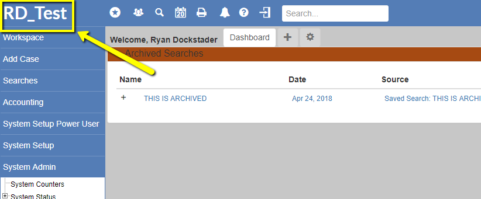
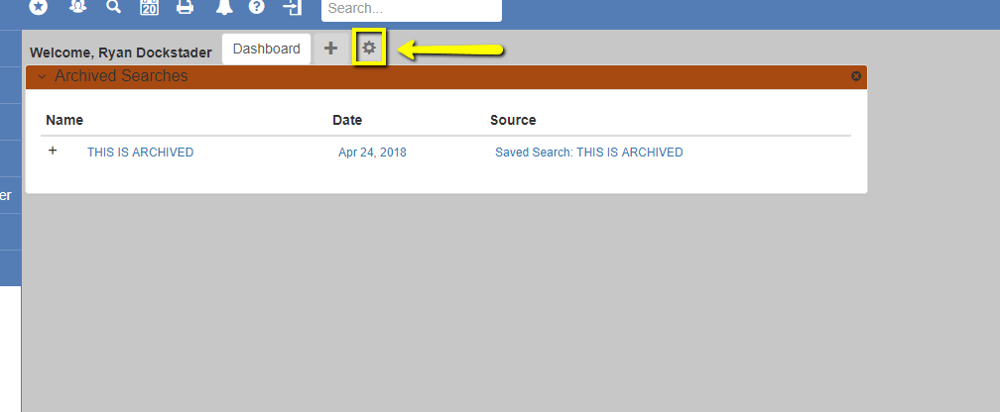
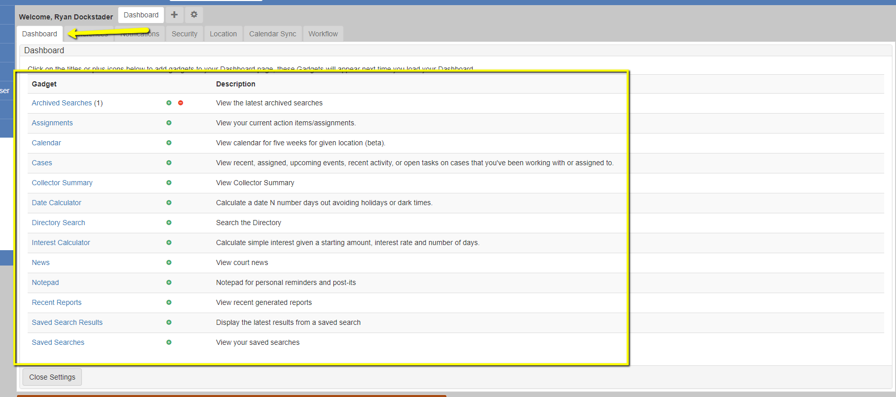
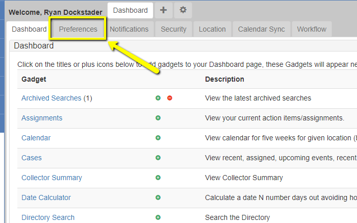
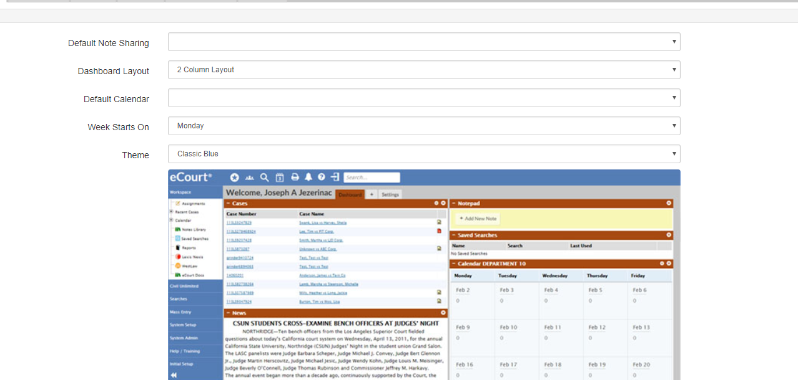
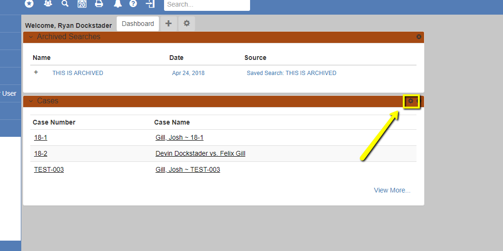

Help with configuring the user dashboard
Each Users Dashboard can be configured in the way that will best fit their personal needs. To configure your dashboard:
If you are not on the dashbaord, navigate there by clicking the instance name in the top left corner of the environment.
Once there, you should see a gear button along the top bar of the dasboard in the furthest right position
Once in the Settings, on the Dashboard tap you're abble to select which gadgets you'd like to add or remove to/from your dashboard. (Selecting the Green + will add, and the Red - will take away)
Once you've got your gadgets selected you can set your preferences by selecting the prefernces tab
Here you can set some defaults, your dashboard layout (1, 2, or 3 columns), your week start date and your theme.
With your preferences and gadgets set, you can now configure each gadget to do what you'd like it to by using the gear located in the top right of the gadget.
